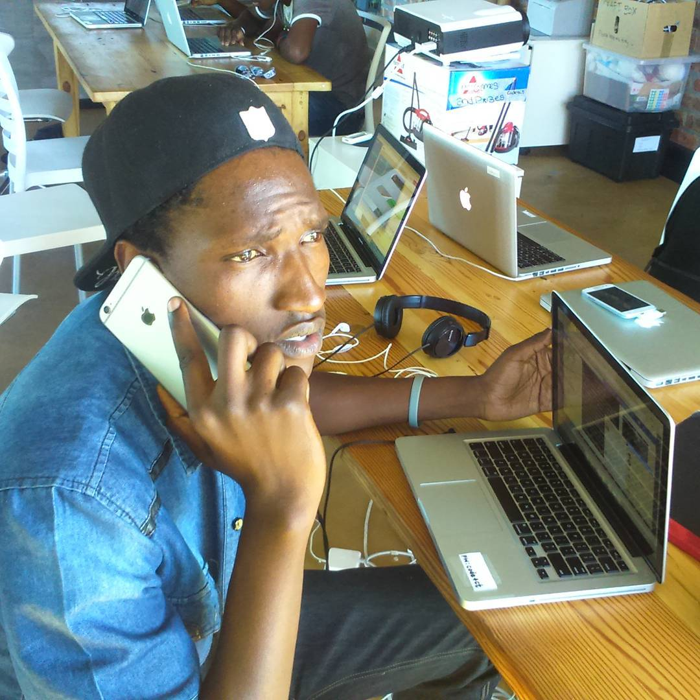

Name:Cliff Denzel
Surname:Nyashanu
i was born December 28 1994 in Zimbabwe Harare, then moved to Cape town in 2006, i went to Cravenby Secondary
School, Graduated 2014.
i was a prefect at school, also got to Captain the under 19 soccer team at school.
i'm passionate about Computers, Specifically programming, bringing new innovative ways to improve the computer
industry of which i'm still learning the different computer Languages, like